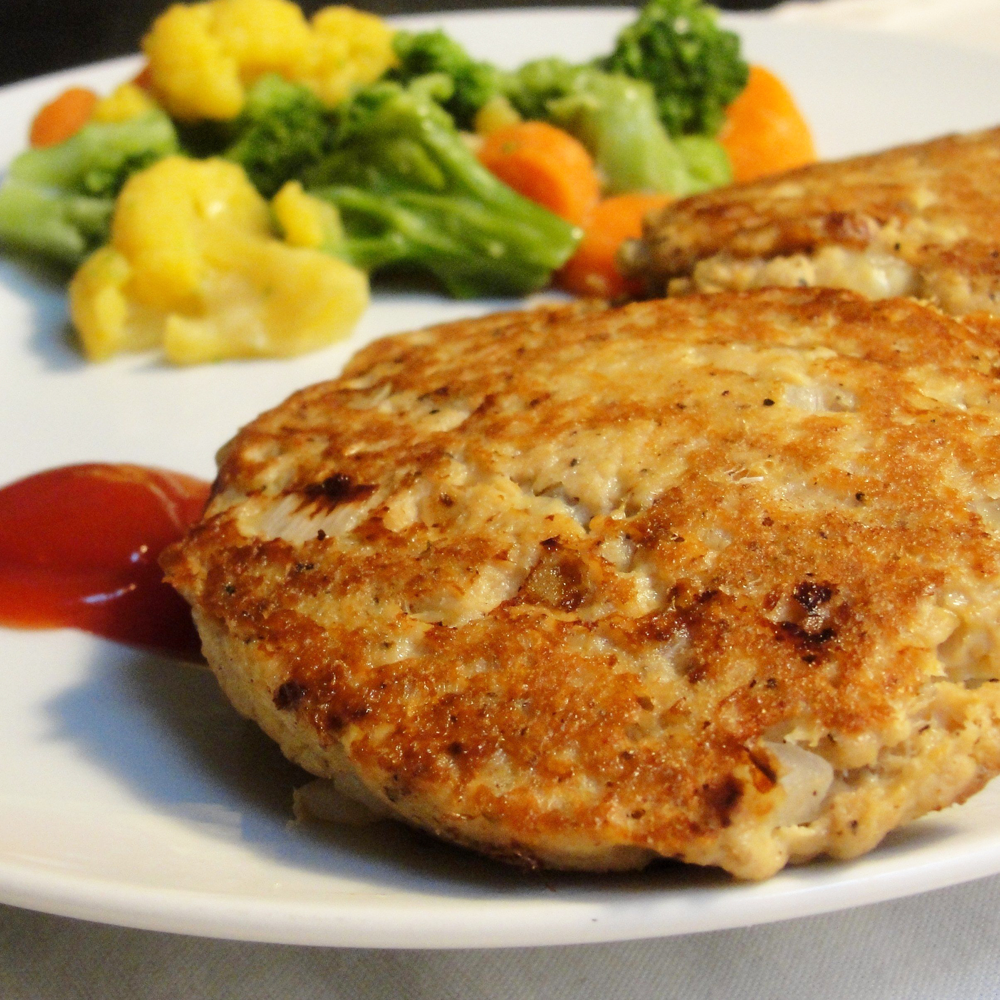

Salmon Fishcakes

Surprisingly simple, yet full of flavour
Simple and delicious fishcakes that work great as a focal point of a dish, or as a wonderful side dish
Ingredients:
- 1 (14.75 ounce) can salmon, drained and flaked
- 2 large eggs, beaten
- 1 small onion, diced
- 1 teaspoon ground black pepper
- 3 tablespoons vegetable oil
Directions:
- Pick through salmon to remove any bones or large pieces of skin.
- Beat eggs in a mixing bowl. Stir in salmon, onion, and black pepper. Mix thoroughly.
- Shape salmon mixture into eight 2-ounce patties.
- Heat oil in a large skillet over medium heat. Fry patties until crispy and golden brown on the outsides, about 5 minutes per side; work in batches if necessary to avoid crowding the pan.
Back to Home Page